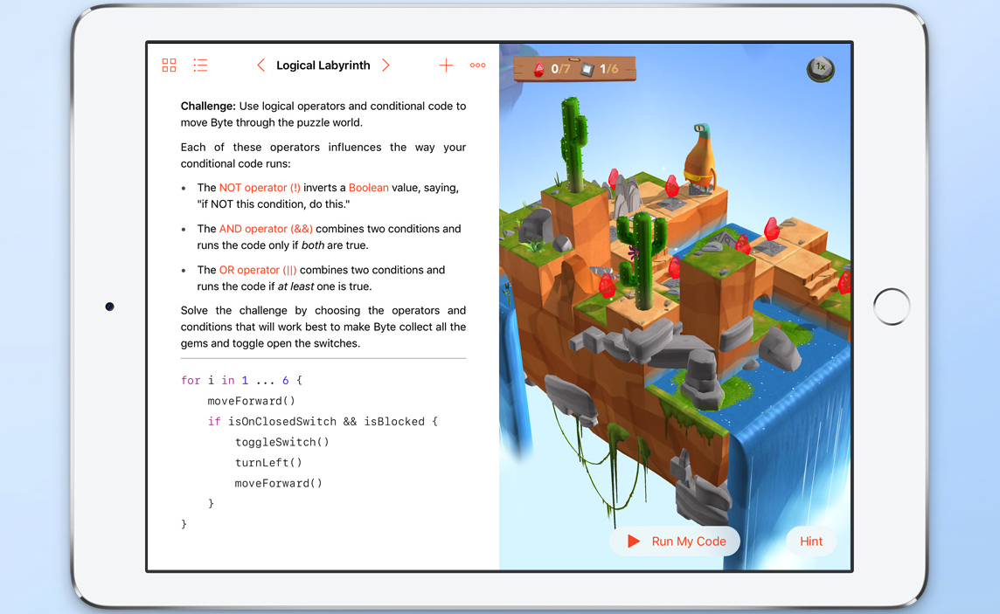

This is my first website.I just joined github and just finished
swift playgrounds.
This is what I learned:
let can change but var could not
learning how to write code and change letter size
blu.jump makes blu jump expert.turn lock up makes expert turn the
lock up you can also turn the teleporter on and off you can make
things repeat by setting functions moving repeats by setting loops
byte.collect gem the reddest gem you also turn switches on and off
if functions with else
This is the story:
let can change but var can not blu.jump expert turn lock up they got
tired and so did i byte go foward and collect gem turn left and toggle
switch i got tired but so happy i need a break/(i am tired)
also lets set images and sounds
This is the funny story
row trust you and vivi lock you up and toggle switch and gem
expert so tired resting while blu jumbs on him byte goes through
function goes on and loops up turn switch and telepotion goes so
hzppy yay by by thanks for reading
the image is swift playground
